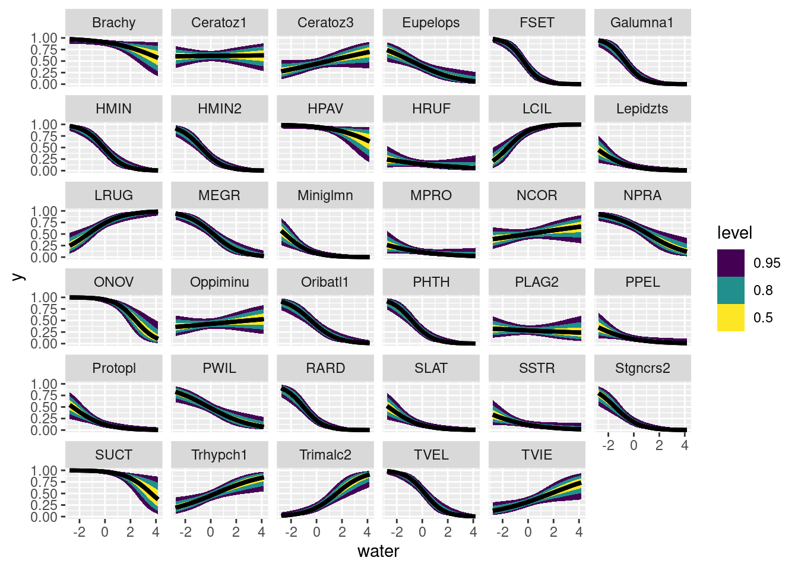
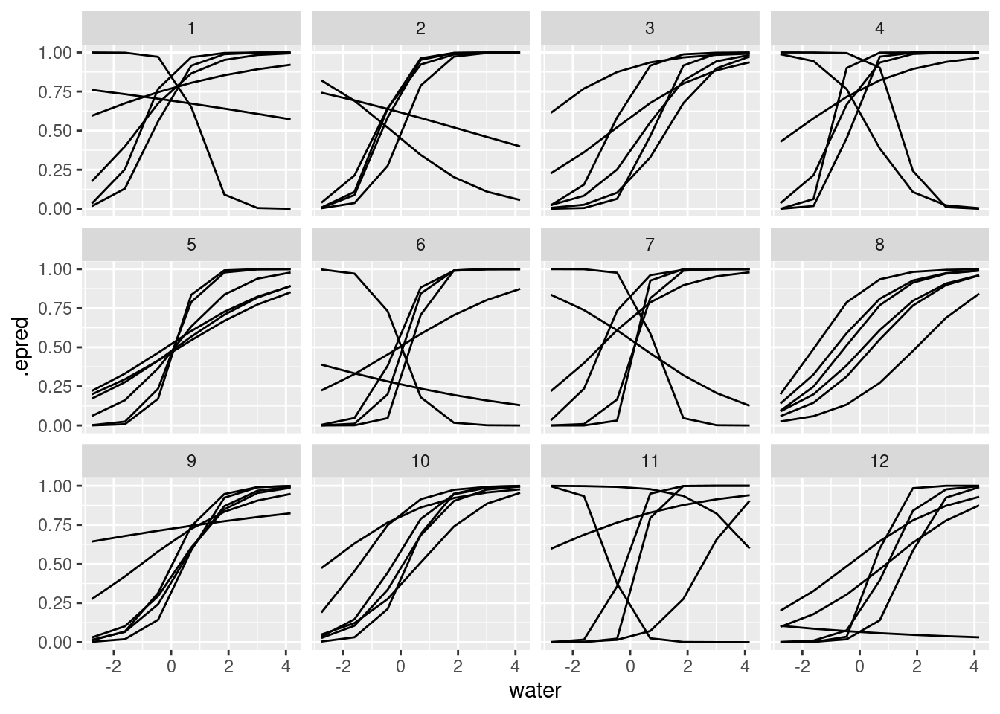

suppressPackageStartupMessages(library(dplyr))
library(ggplot2)
library(tidyr)
suppressPackageStartupMessages(library(rstanarm))
library(tidybayes)
data(mite, package = "vegan")
data("mite.env", package = "vegan")
data("mite.xy", package = "vegan")Logistic GLMs: mite responses to water
We’ve already looked at univariate models. When we fit the same model to multiple different groups, we don’t expect the same values for all the coefficients. Each thing we are studying will respond to the same variable in different ways.
Hierarchial models represent a way to model this variation, in ways that range from simple to complex.
Before we dive in with hierarchical structure, let’s build a bridge between these two approaches.
This is useful to help us understand what a hierarchical model does.
However it is also useful from a strict model-building perspective – so useful that Andrew Gelman calls it a “Secret Weapon”
Loading models and data
And some quick data restructuring to combine both.
# combine data and environment
mite_data_long <- bind_cols(mite.env, mite) |>
pivot_longer(Brachy:Trimalc2, names_to = "spp", values_to = "abd")To keep things simple and univariate, let’s consider only water concentration as an independent variable.
First, a quick word about centering and scaling a predictor variable:
- I center the predictor by subtracting the mean. This changes the intercept of my linear predictor. it becomes the mean log-odds of occurrance when the water content is average
- I divide water content by 100. The dataset has units of grams per Litre of water (see
?vegan::mite.envfor more details). This is fine, but I don’t think mites are able to sense differences as precise as a millimeter of water either way. by dividing by 10 I transform this into centilitres, which is more informative.
mite_data_long_transformed <- mite_data_long |>
mutate(presabs = as.numeric(abd>0),
# center predictors
water = (WatrCont - mean(WatrCont)) / 100
)
mite_data_long_transformed |>
ggplot(aes(x = water, y = presabs)) +
geom_point() +
stat_smooth(method = "glm", method.args = list(family = "binomial")) +
facet_wrap(~spp)`geom_smooth()` using formula = 'y ~ x'
some things to notice about this figure:
- the x-axis scale has been transformed from “grams per litre” to “centilitres away from average
- there is a ton of variation in how different species respond to water!
mite_many_glms <- mite_data_long_transformed |>
nest_by(spp) |>
mutate(logistic_regressions = list(
glm(presabs ~ water,
family = "binomial",
data = data))) |>
mutate(coefs = list(broom::tidy(logistic_regressions)))
mite_many_glms <- mite_data_long_transformed |>
nest_by(spp) |>
mutate(logistic_regressions = list(
glm(presabs ~ 1 + water,
family = binomial(link = "logit"),
data = data)
)) |>
mutate(coefs = list(broom::tidy(logistic_regressions)))
broom::tidy(mite_many_glms$logistic_regressions[[5]])# A tibble: 2 × 5
term estimate std.error statistic p.value
<chr> <dbl> <dbl> <dbl> <dbl>
1 (Intercept) -0.644 0.353 -1.82 0.0684
2 water -1.82 0.446 -4.08 0.0000450broom::glance(mite_many_glms$logistic_regressions[[5]])# A tibble: 1 × 8
null.deviance df.null logLik AIC BIC deviance df.residual nobs
<dbl> <int> <dbl> <dbl> <dbl> <dbl> <int> <int>
1 95.6 69 -28.3 60.6 65.1 56.6 68 70mite_many_glms$coefs[[5]]# A tibble: 2 × 5
term estimate std.error statistic p.value
<chr> <dbl> <dbl> <dbl> <dbl>
1 (Intercept) -0.644 0.353 -1.82 0.0684
2 water -1.82 0.446 -4.08 0.0000450
Split-Apply-Combine
To explore this kind of thinking, we are going to use an approach sometimes called “split-apply-combine”
There are many possible ways to do this in practice. We are using a technique here from the tidyverse, which you can read more about.
mite_many_glm_coefs <- mite_many_glms |>
select(-data, -logistic_regressions) |>
unnest(coefs)
mite_many_glm_coefs |>
ggplot(aes(x = estimate, y = spp,
xmin = estimate - std.error,
xmax = estimate + std.error)) +
geom_pointrange() +
facet_wrap(~term, scales = "free")
As you can see, some of these estimates are high, others low. We could also plot these as histograms to see this distribution.
mite_many_glm_coefs |>
ggplot(aes(x = estimate)) +
geom_histogram(binwidth = .5) +
facet_wrap(~term, scales = "free")
Once again, the two parameters of this model represent:
- Intercept The probability (in log-odds) of a species being present at the average water concentration. some species are common, others are rare.
- water this is the change in probability (in log-odds) as water increases by one centilitre per litre of substrate.
Modelling multiple slopes in rstanarm
mite_data_long_transformed |> glimpse()Rows: 2,450
Columns: 9
$ SubsDens <dbl> 39.18, 39.18, 39.18, 39.18, 39.18, 39.18, 39.18, 39.18, 39.1…
$ WatrCont <dbl> 350.15, 350.15, 350.15, 350.15, 350.15, 350.15, 350.15, 350.…
$ Substrate <fct> Sphagn1, Sphagn1, Sphagn1, Sphagn1, Sphagn1, Sphagn1, Sphagn…
$ Shrub <ord> Few, Few, Few, Few, Few, Few, Few, Few, Few, Few, Few, Few, …
$ Topo <fct> Hummock, Hummock, Hummock, Hummock, Hummock, Hummock, Hummoc…
$ spp <chr> "Brachy", "PHTH", "HPAV", "RARD", "SSTR", "Protopl", "MEGR",…
$ abd <int> 17, 5, 5, 3, 2, 1, 4, 2, 2, 1, 4, 1, 17, 4, 9, 50, 3, 1, 1, …
$ presabs <dbl> 1, 1, 1, 1, 1, 1, 1, 1, 1, 1, 1, 1, 1, 1, 1, 1, 1, 1, 1, 1, …
$ water <dbl> -0.6048571, -0.6048571, -0.6048571, -0.6048571, -0.6048571, …mite_slopes_corr_stan <- stan_glmer(
presabs ~ 1 + water + (1 + water | spp),
family = binomial(link = "logit"),
data = mite_data_long_transformed,
# priors
prior = normal(0, .2),
prior_intercept = normal(-.2, .5),
prior_covariance = decov(
regularization = 2,
concentration = 1,
shape = .4,
scale = 1),
chains = 4,
iter = 2000,
refresh = 0
)Warning: Bulk Effective Samples Size (ESS) is too low, indicating posterior means and medians may be unreliable.
Running the chains for more iterations may help. See
https://mc-stan.org/misc/warnings.html#bulk-esssummary(mite_slopes_corr_stan)
Model Info:
function: stan_glmer
family: binomial [logit]
formula: presabs ~ 1 + water + (1 + water | spp)
algorithm: sampling
sample: 4000 (posterior sample size)
priors: see help('prior_summary')
observations: 2450
groups: spp (35)
Estimates:
mean sd 10% 50% 90%
(Intercept) -0.3 0.2 -0.6 -0.3 0.0
water -0.4 0.1 -0.5 -0.4 -0.2
b[(Intercept) spp:Brachy] 2.6 0.5 2.0 2.6 3.2
b[water spp:Brachy] -0.1 0.3 -0.5 -0.1 0.2
b[(Intercept) spp:Ceratoz1] 0.8 0.3 0.3 0.8 1.2
b[water spp:Ceratoz1] 0.4 0.2 0.1 0.4 0.6
b[(Intercept) spp:Ceratoz3] 0.1 0.3 -0.4 0.1 0.5
b[water spp:Ceratoz3] 0.6 0.2 0.3 0.6 0.9
b[(Intercept) spp:Eupelops] -0.2 0.4 -0.6 -0.2 0.3
b[water spp:Eupelops] -0.2 0.2 -0.5 -0.2 0.1
b[(Intercept) spp:FSET] -0.3 0.4 -0.8 -0.3 0.2
b[water spp:FSET] -1.2 0.4 -1.7 -1.2 -0.8
b[(Intercept) spp:Galumna1] -0.7 0.4 -1.3 -0.7 -0.2
b[water spp:Galumna1] -1.1 0.4 -1.6 -1.1 -0.7
b[(Intercept) spp:HMIN] 0.1 0.4 -0.3 0.1 0.6
b[water spp:HMIN] -0.9 0.3 -1.3 -0.9 -0.5
b[(Intercept) spp:HMIN2] -0.6 0.4 -1.1 -0.6 -0.1
b[water spp:HMIN2] -0.8 0.3 -1.3 -0.8 -0.5
b[(Intercept) spp:HPAV] 3.2 0.6 2.5 3.2 4.0
b[water spp:HPAV] -0.2 0.3 -0.6 -0.2 0.2
b[(Intercept) spp:HRUF] -1.5 0.4 -2.1 -1.5 -1.0
b[water spp:HRUF] 0.1 0.3 -0.2 0.1 0.4
b[(Intercept) spp:LCIL] 2.1 0.5 1.5 2.1 2.7
b[water spp:LCIL] 1.5 0.3 1.1 1.5 1.9
b[(Intercept) spp:Lepidzts] -2.1 0.5 -2.8 -2.1 -1.5
b[water spp:Lepidzts] -0.4 0.3 -0.9 -0.4 0.0
b[(Intercept) spp:LRUG] 1.3 0.4 0.8 1.3 1.8
b[water spp:LRUG] 1.1 0.3 0.8 1.1 1.5
b[(Intercept) spp:MEGR] 0.5 0.4 0.0 0.5 1.0
b[water spp:MEGR] -0.6 0.3 -1.0 -0.6 -0.2
b[(Intercept) spp:Miniglmn] -2.1 0.5 -2.8 -2.1 -1.5
b[water spp:Miniglmn] -0.6 0.3 -1.1 -0.6 -0.2
b[(Intercept) spp:MPRO] -1.8 0.5 -2.4 -1.8 -1.3
b[water spp:MPRO] 0.0 0.3 -0.4 0.0 0.3
b[(Intercept) spp:NCOR] 0.3 0.3 -0.1 0.3 0.7
b[water spp:NCOR] 0.5 0.2 0.2 0.5 0.8
b[(Intercept) spp:NPRA] 1.0 0.4 0.6 1.0 1.5
b[water spp:NPRA] -0.3 0.2 -0.6 -0.3 0.0
b[(Intercept) spp:ONOV] 3.3 0.7 2.5 3.3 4.2
b[water spp:ONOV] -0.9 0.4 -1.4 -0.9 -0.4
b[(Intercept) spp:Oppiminu] 0.0 0.3 -0.4 0.0 0.4
b[water spp:Oppiminu] 0.5 0.2 0.2 0.5 0.7
b[(Intercept) spp:Oribatl1] -0.1 0.4 -0.6 -0.1 0.3
b[water spp:Oribatl1] -0.6 0.3 -1.0 -0.6 -0.3
b[(Intercept) spp:PHTH] -0.7 0.4 -1.3 -0.7 -0.2
b[water spp:PHTH] -0.9 0.3 -1.3 -0.9 -0.5
b[(Intercept) spp:PLAG2] -0.6 0.4 -1.1 -0.6 -0.2
b[water spp:PLAG2] 0.3 0.2 0.0 0.3 0.6
b[(Intercept) spp:PPEL] -2.0 0.5 -2.6 -1.9 -1.3
b[water spp:PPEL] -0.2 0.3 -0.6 -0.2 0.2
b[(Intercept) spp:Protopl] -1.7 0.5 -2.3 -1.7 -1.1
b[water spp:Protopl] -0.4 0.3 -0.8 -0.4 -0.1
b[(Intercept) spp:PWIL] 0.2 0.4 -0.2 0.2 0.7
b[water spp:PWIL] -0.2 0.2 -0.6 -0.2 0.1
b[(Intercept) spp:RARD] -1.1 0.4 -1.6 -1.0 -0.5
b[water spp:RARD] -1.0 0.3 -1.4 -1.0 -0.6
b[(Intercept) spp:SLAT] -1.9 0.5 -2.5 -1.8 -1.3
b[water spp:SLAT] -0.5 0.3 -0.9 -0.4 -0.1
b[(Intercept) spp:SSTR] -1.8 0.5 -2.3 -1.7 -1.2
b[water spp:SSTR] -0.1 0.3 -0.5 -0.1 0.2
b[(Intercept) spp:Stgncrs2] -1.3 0.4 -1.9 -1.3 -0.8
b[water spp:Stgncrs2] -0.7 0.3 -1.1 -0.7 -0.3
b[(Intercept) spp:SUCT] 3.9 0.7 3.0 3.8 4.8
b[water spp:SUCT] -0.6 0.4 -1.1 -0.6 -0.2
b[(Intercept) spp:Trhypch1] 0.1 0.3 -0.3 0.1 0.6
b[water spp:Trhypch1] 0.8 0.2 0.5 0.8 1.1
b[(Intercept) spp:Trimalc2] -1.1 0.4 -1.7 -1.1 -0.6
b[water spp:Trimalc2] 1.3 0.3 0.9 1.3 1.6
b[(Intercept) spp:TVEL] 0.6 0.4 0.1 0.6 1.1
b[water spp:TVEL] -1.0 0.3 -1.4 -1.0 -0.6
b[(Intercept) spp:TVIE] -0.5 0.4 -0.9 -0.5 0.0
b[water spp:TVIE] 0.8 0.2 0.5 0.8 1.1
Sigma[spp:(Intercept),(Intercept)] 2.7 0.7 1.9 2.6 3.7
Sigma[spp:water,(Intercept)] 0.1 0.2 -0.2 0.1 0.4
Sigma[spp:water,water] 0.7 0.2 0.4 0.6 1.0
Fit Diagnostics:
mean sd 10% 50% 90%
mean_PPD 0.4 0.0 0.4 0.4 0.4
The mean_ppd is the sample average posterior predictive distribution of the outcome variable (for details see help('summary.stanreg')).
MCMC diagnostics
mcse Rhat n_eff
(Intercept) 0.0 1.0 351
water 0.0 1.0 896
b[(Intercept) spp:Brachy] 0.0 1.0 1249
b[water spp:Brachy] 0.0 1.0 2722
b[(Intercept) spp:Ceratoz1] 0.0 1.0 660
b[water spp:Ceratoz1] 0.0 1.0 1930
b[(Intercept) spp:Ceratoz3] 0.0 1.0 636
b[water spp:Ceratoz3] 0.0 1.0 1684
b[(Intercept) spp:Eupelops] 0.0 1.0 692
b[water spp:Eupelops] 0.0 1.0 2223
b[(Intercept) spp:FSET] 0.0 1.0 865
b[water spp:FSET] 0.0 1.0 2505
b[(Intercept) spp:Galumna1] 0.0 1.0 870
b[water spp:Galumna1] 0.0 1.0 2649
b[(Intercept) spp:HMIN] 0.0 1.0 770
b[water spp:HMIN] 0.0 1.0 2876
b[(Intercept) spp:HMIN2] 0.0 1.0 837
b[water spp:HMIN2] 0.0 1.0 2520
b[(Intercept) spp:HPAV] 0.0 1.0 1342
b[water spp:HPAV] 0.0 1.0 3136
b[(Intercept) spp:HRUF] 0.0 1.0 947
b[water spp:HRUF] 0.0 1.0 2555
b[(Intercept) spp:LCIL] 0.0 1.0 1096
b[water spp:LCIL] 0.0 1.0 3323
b[(Intercept) spp:Lepidzts] 0.0 1.0 1436
b[water spp:Lepidzts] 0.0 1.0 3385
b[(Intercept) spp:LRUG] 0.0 1.0 803
b[water spp:LRUG] 0.0 1.0 3048
b[(Intercept) spp:MEGR] 0.0 1.0 738
b[water spp:MEGR] 0.0 1.0 2430
b[(Intercept) spp:Miniglmn] 0.0 1.0 1644
b[water spp:Miniglmn] 0.0 1.0 2828
b[(Intercept) spp:MPRO] 0.0 1.0 1063
b[water spp:MPRO] 0.0 1.0 2994
b[(Intercept) spp:NCOR] 0.0 1.0 566
b[water spp:NCOR] 0.0 1.0 2130
b[(Intercept) spp:NPRA] 0.0 1.0 630
b[water spp:NPRA] 0.0 1.0 2353
b[(Intercept) spp:ONOV] 0.0 1.0 1359
b[water spp:ONOV] 0.0 1.0 2669
b[(Intercept) spp:Oppiminu] 0.0 1.0 622
b[water spp:Oppiminu] 0.0 1.0 2021
b[(Intercept) spp:Oribatl1] 0.0 1.0 763
b[water spp:Oribatl1] 0.0 1.0 2541
b[(Intercept) spp:PHTH] 0.0 1.0 906
b[water spp:PHTH] 0.0 1.0 2908
b[(Intercept) spp:PLAG2] 0.0 1.0 728
b[water spp:PLAG2] 0.0 1.0 2322
b[(Intercept) spp:PPEL] 0.0 1.0 1044
b[water spp:PPEL] 0.0 1.0 3192
b[(Intercept) spp:Protopl] 0.0 1.0 1213
b[water spp:Protopl] 0.0 1.0 2947
b[(Intercept) spp:PWIL] 0.0 1.0 693
b[water spp:PWIL] 0.0 1.0 2213
b[(Intercept) spp:RARD] 0.0 1.0 901
b[water spp:RARD] 0.0 1.0 2857
b[(Intercept) spp:SLAT] 0.0 1.0 1302
b[water spp:SLAT] 0.0 1.0 2761
b[(Intercept) spp:SSTR] 0.0 1.0 1125
b[water spp:SSTR] 0.0 1.0 2871
b[(Intercept) spp:Stgncrs2] 0.0 1.0 914
b[water spp:Stgncrs2] 0.0 1.0 2505
b[(Intercept) spp:SUCT] 0.0 1.0 1952
b[water spp:SUCT] 0.0 1.0 2458
b[(Intercept) spp:Trhypch1] 0.0 1.0 666
b[water spp:Trhypch1] 0.0 1.0 2251
b[(Intercept) spp:Trimalc2] 0.0 1.0 913
b[water spp:Trimalc2] 0.0 1.0 3347
b[(Intercept) spp:TVEL] 0.0 1.0 728
b[water spp:TVEL] 0.0 1.0 3029
b[(Intercept) spp:TVIE] 0.0 1.0 700
b[water spp:TVIE] 0.0 1.0 2297
Sigma[spp:(Intercept),(Intercept)] 0.0 1.0 743
Sigma[spp:water,(Intercept)] 0.0 1.0 942
Sigma[spp:water,water] 0.0 1.0 1122
mean_PPD 0.0 1.0 3994
log-posterior 0.3 1.0 774
For each parameter, mcse is Monte Carlo standard error, n_eff is a crude measure of effective sample size, and Rhat is the potential scale reduction factor on split chains (at convergence Rhat=1).curve(dgamma(x, shape = .4, scale = 7), xlim = c(0, 5))
mean(rgamma(5000, shape = .4, scale = 1))[1] 0.3901756plot it on the data:
predicted_mite_curves <- mite_data_long_transformed |>
modelr::data_grid(
water = modelr::seq_range(water, n = 20) ,
spp = spp #head(spp)
) |>
add_epred_rvars(mite_slopes_corr_stan)
predicted_mite_curves |>
ggplot(aes(x = water, ydist = .epred)) +
tidybayes::stat_lineribbon() +
facet_wrap(~spp)
calculating species richness
predicted_mite_curves |>
pivot_wider(names_from = spp, values_from = .epred) |>
nest_by(water) |>
mutate(S = Reduce(`+`, data)) |>
ggplot(aes(x = water, ydist = S)) +
stat_lineribbon()
Prior predictions
mite_data_long_transformed |> glimpse()Rows: 2,450
Columns: 9
$ SubsDens <dbl> 39.18, 39.18, 39.18, 39.18, 39.18, 39.18, 39.18, 39.18, 39.1…
$ WatrCont <dbl> 350.15, 350.15, 350.15, 350.15, 350.15, 350.15, 350.15, 350.…
$ Substrate <fct> Sphagn1, Sphagn1, Sphagn1, Sphagn1, Sphagn1, Sphagn1, Sphagn…
$ Shrub <ord> Few, Few, Few, Few, Few, Few, Few, Few, Few, Few, Few, Few, …
$ Topo <fct> Hummock, Hummock, Hummock, Hummock, Hummock, Hummock, Hummoc…
$ spp <chr> "Brachy", "PHTH", "HPAV", "RARD", "SSTR", "Protopl", "MEGR",…
$ abd <int> 17, 5, 5, 3, 2, 1, 4, 2, 2, 1, 4, 1, 17, 4, 9, 50, 3, 1, 1, …
$ presabs <dbl> 1, 1, 1, 1, 1, 1, 1, 1, 1, 1, 1, 1, 1, 1, 1, 1, 1, 1, 1, 1, …
$ water <dbl> -0.6048571, -0.6048571, -0.6048571, -0.6048571, -0.6048571, …mite_PD_stan <- stan_glmer(
presabs ~ 1 + water + (1 + water | spp),
family = binomial(link = "logit"),
data = mite_data_long_transformed,
# priors
prior = normal(1, .2),
prior_intercept = normal(.2, .5),
prior_covariance = decov(
regularization = 2,
concentration = 1,
shape = 2,
scale = 1),
prior_PD= TRUE,
chains = 4,
iter = 2000,
refresh = 500
)
SAMPLING FOR MODEL 'bernoulli' NOW (CHAIN 1).
Chain 1:
Chain 1: Gradient evaluation took 4.2e-05 seconds
Chain 1: 1000 transitions using 10 leapfrog steps per transition would take 0.42 seconds.
Chain 1: Adjust your expectations accordingly!
Chain 1:
Chain 1:
Chain 1: Iteration: 1 / 2000 [ 0%] (Warmup)
Chain 1: Iteration: 500 / 2000 [ 25%] (Warmup)
Chain 1: Iteration: 1000 / 2000 [ 50%] (Warmup)
Chain 1: Iteration: 1001 / 2000 [ 50%] (Sampling)
Chain 1: Iteration: 1500 / 2000 [ 75%] (Sampling)
Chain 1: Iteration: 2000 / 2000 [100%] (Sampling)
Chain 1:
Chain 1: Elapsed Time: 0.283 seconds (Warm-up)
Chain 1: 0.259 seconds (Sampling)
Chain 1: 0.542 seconds (Total)
Chain 1:
SAMPLING FOR MODEL 'bernoulli' NOW (CHAIN 2).
Chain 2:
Chain 2: Gradient evaluation took 3.5e-05 seconds
Chain 2: 1000 transitions using 10 leapfrog steps per transition would take 0.35 seconds.
Chain 2: Adjust your expectations accordingly!
Chain 2:
Chain 2:
Chain 2: Iteration: 1 / 2000 [ 0%] (Warmup)
Chain 2: Iteration: 500 / 2000 [ 25%] (Warmup)
Chain 2: Iteration: 1000 / 2000 [ 50%] (Warmup)
Chain 2: Iteration: 1001 / 2000 [ 50%] (Sampling)
Chain 2: Iteration: 1500 / 2000 [ 75%] (Sampling)
Chain 2: Iteration: 2000 / 2000 [100%] (Sampling)
Chain 2:
Chain 2: Elapsed Time: 0.264 seconds (Warm-up)
Chain 2: 0.259 seconds (Sampling)
Chain 2: 0.523 seconds (Total)
Chain 2:
SAMPLING FOR MODEL 'bernoulli' NOW (CHAIN 3).
Chain 3:
Chain 3: Gradient evaluation took 2.4e-05 seconds
Chain 3: 1000 transitions using 10 leapfrog steps per transition would take 0.24 seconds.
Chain 3: Adjust your expectations accordingly!
Chain 3:
Chain 3:
Chain 3: Iteration: 1 / 2000 [ 0%] (Warmup)
Chain 3: Iteration: 500 / 2000 [ 25%] (Warmup)
Chain 3: Iteration: 1000 / 2000 [ 50%] (Warmup)
Chain 3: Iteration: 1001 / 2000 [ 50%] (Sampling)
Chain 3: Iteration: 1500 / 2000 [ 75%] (Sampling)
Chain 3: Iteration: 2000 / 2000 [100%] (Sampling)
Chain 3:
Chain 3: Elapsed Time: 0.267 seconds (Warm-up)
Chain 3: 0.26 seconds (Sampling)
Chain 3: 0.527 seconds (Total)
Chain 3:
SAMPLING FOR MODEL 'bernoulli' NOW (CHAIN 4).
Chain 4:
Chain 4: Gradient evaluation took 2.5e-05 seconds
Chain 4: 1000 transitions using 10 leapfrog steps per transition would take 0.25 seconds.
Chain 4: Adjust your expectations accordingly!
Chain 4:
Chain 4:
Chain 4: Iteration: 1 / 2000 [ 0%] (Warmup)
Chain 4: Iteration: 500 / 2000 [ 25%] (Warmup)
Chain 4: Iteration: 1000 / 2000 [ 50%] (Warmup)
Chain 4: Iteration: 1001 / 2000 [ 50%] (Sampling)
Chain 4: Iteration: 1500 / 2000 [ 75%] (Sampling)
Chain 4: Iteration: 2000 / 2000 [100%] (Sampling)
Chain 4:
Chain 4: Elapsed Time: 0.274 seconds (Warm-up)
Chain 4: 0.26 seconds (Sampling)
Chain 4: 0.534 seconds (Total)
Chain 4: summary(mite_PD_stan)
Model Info:
function: stan_glmer
family: binomial [logit]
formula: presabs ~ 1 + water + (1 + water | spp)
algorithm: sampling
sample: 4000 (posterior sample size)
priors: see help('prior_summary')
observations: 2450
groups: spp (35)
Estimates:
mean sd 10% 50% 90%
(Intercept) 0.2 0.5 -0.5 0.2 0.9
water 1.0 0.2 0.7 1.0 1.3
b[(Intercept) spp:Brachy] 0.0 2.4 -2.4 0.0 2.3
b[water spp:Brachy] 0.0 2.4 -2.3 0.0 2.4
b[(Intercept) spp:Ceratoz1] 0.0 2.4 -2.4 0.0 2.3
b[water spp:Ceratoz1] 0.0 2.3 -2.3 0.0 2.3
b[(Intercept) spp:Ceratoz3] 0.0 2.4 -2.2 0.0 2.4
b[water spp:Ceratoz3] 0.0 2.5 -2.4 0.0 2.5
b[(Intercept) spp:Eupelops] 0.0 2.5 -2.3 0.0 2.3
b[water spp:Eupelops] -0.1 2.4 -2.3 0.0 2.3
b[(Intercept) spp:FSET] 0.0 2.4 -2.4 0.0 2.4
b[water spp:FSET] -0.1 2.5 -2.5 0.0 2.2
b[(Intercept) spp:Galumna1] 0.0 2.4 -2.2 0.0 2.2
b[water spp:Galumna1] -0.1 2.4 -2.4 0.0 2.2
b[(Intercept) spp:HMIN] 0.1 2.4 -2.3 0.0 2.4
b[water spp:HMIN] 0.0 2.3 -2.3 0.0 2.2
b[(Intercept) spp:HMIN2] 0.0 2.3 -2.2 0.0 2.1
b[water spp:HMIN2] 0.0 2.4 -2.3 0.0 2.4
b[(Intercept) spp:HPAV] 0.1 2.4 -2.2 0.0 2.4
b[water spp:HPAV] 0.0 2.4 -2.3 0.0 2.4
b[(Intercept) spp:HRUF] 0.1 2.4 -2.4 0.0 2.5
b[water spp:HRUF] -0.1 2.5 -2.4 0.0 2.3
b[(Intercept) spp:LCIL] 0.0 2.4 -2.3 0.0 2.3
b[water spp:LCIL] 0.0 2.5 -2.4 0.0 2.4
b[(Intercept) spp:Lepidzts] 0.0 2.5 -2.4 0.0 2.5
b[water spp:Lepidzts] 0.0 2.5 -2.5 0.0 2.4
b[(Intercept) spp:LRUG] 0.0 2.3 -2.3 0.0 2.3
b[water spp:LRUG] 0.0 2.4 -2.3 0.0 2.3
b[(Intercept) spp:MEGR] 0.0 2.4 -2.3 0.0 2.4
b[water spp:MEGR] 0.0 2.4 -2.3 0.0 2.4
b[(Intercept) spp:Miniglmn] 0.0 2.3 -2.3 0.0 2.3
b[water spp:Miniglmn] 0.0 2.5 -2.3 0.0 2.4
b[(Intercept) spp:MPRO] 0.0 2.4 -2.4 0.0 2.3
b[water spp:MPRO] -0.1 2.4 -2.3 0.0 2.2
b[(Intercept) spp:NCOR] 0.0 2.3 -2.1 0.0 2.2
b[water spp:NCOR] 0.0 2.5 -2.4 0.0 2.4
b[(Intercept) spp:NPRA] 0.0 2.4 -2.3 0.0 2.3
b[water spp:NPRA] 0.1 2.6 -2.2 0.0 2.6
b[(Intercept) spp:ONOV] 0.0 2.3 -2.3 0.0 2.3
b[water spp:ONOV] 0.0 2.3 -2.3 0.0 2.3
b[(Intercept) spp:Oppiminu] 0.0 2.4 -2.3 0.0 2.4
b[water spp:Oppiminu] -0.1 2.4 -2.6 0.0 2.3
b[(Intercept) spp:Oribatl1] 0.0 2.4 -2.3 0.0 2.3
b[water spp:Oribatl1] 0.0 2.5 -2.4 0.0 2.3
b[(Intercept) spp:PHTH] 0.0 2.4 -2.3 0.0 2.3
b[water spp:PHTH] -0.1 2.2 -2.4 0.0 2.1
b[(Intercept) spp:PLAG2] 0.0 2.4 -2.3 0.0 2.3
b[water spp:PLAG2] 0.0 2.5 -2.4 0.0 2.4
b[(Intercept) spp:PPEL] 0.0 2.3 -2.3 0.0 2.2
b[water spp:PPEL] 0.0 2.5 -2.3 0.0 2.4
b[(Intercept) spp:Protopl] 0.0 2.4 -2.4 0.0 2.3
b[water spp:Protopl] 0.0 2.6 -2.3 0.0 2.4
b[(Intercept) spp:PWIL] 0.0 2.4 -2.3 0.0 2.2
b[water spp:PWIL] 0.0 2.4 -2.3 0.0 2.4
b[(Intercept) spp:RARD] 0.0 2.3 -2.1 0.0 2.3
b[water spp:RARD] 0.0 2.4 -2.3 0.0 2.3
b[(Intercept) spp:SLAT] 0.0 2.4 -2.3 0.0 2.4
b[water spp:SLAT] 0.0 2.6 -2.4 0.0 2.4
b[(Intercept) spp:SSTR] 0.1 2.4 -2.2 0.0 2.5
b[water spp:SSTR] 0.0 2.5 -2.4 0.0 2.3
b[(Intercept) spp:Stgncrs2] 0.0 2.3 -2.3 0.0 2.2
b[water spp:Stgncrs2] 0.0 2.6 -2.4 0.0 2.6
b[(Intercept) spp:SUCT] 0.0 2.5 -2.5 0.0 2.5
b[water spp:SUCT] 0.0 2.5 -2.3 0.0 2.4
b[(Intercept) spp:Trhypch1] 0.0 2.3 -2.5 0.0 2.4
b[water spp:Trhypch1] -0.1 2.5 -2.4 0.0 2.2
b[(Intercept) spp:Trimalc2] 0.1 2.4 -2.1 0.0 2.5
b[water spp:Trimalc2] 0.0 2.3 -2.3 0.0 2.3
b[(Intercept) spp:TVEL] 0.0 2.3 -2.3 0.0 2.2
b[water spp:TVEL] 0.0 2.4 -2.2 0.0 2.2
b[(Intercept) spp:TVIE] 0.0 2.4 -2.3 0.0 2.2
b[water spp:TVIE] -0.1 2.5 -2.5 0.0 2.2
Sigma[spp:(Intercept),(Intercept)] 5.7 9.8 0.1 2.1 15.0
Sigma[spp:water,(Intercept)] 0.0 4.0 -2.3 0.0 2.4
Sigma[spp:water,water] 6.0 11.2 0.1 2.2 15.8
MCMC diagnostics
mcse Rhat n_eff
(Intercept) 0.0 1.0 7989
water 0.0 1.0 8211
b[(Intercept) spp:Brachy] 0.0 1.0 3494
b[water spp:Brachy] 0.0 1.0 3056
b[(Intercept) spp:Ceratoz1] 0.0 1.0 3815
b[water spp:Ceratoz1] 0.0 1.0 3537
b[(Intercept) spp:Ceratoz3] 0.0 1.0 4250
b[water spp:Ceratoz3] 0.0 1.0 3752
b[(Intercept) spp:Eupelops] 0.0 1.0 3174
b[water spp:Eupelops] 0.0 1.0 3018
b[(Intercept) spp:FSET] 0.0 1.0 4063
b[water spp:FSET] 0.0 1.0 3234
b[(Intercept) spp:Galumna1] 0.0 1.0 4081
b[water spp:Galumna1] 0.0 1.0 3723
b[(Intercept) spp:HMIN] 0.0 1.0 3714
b[water spp:HMIN] 0.0 1.0 3540
b[(Intercept) spp:HMIN2] 0.0 1.0 4005
b[water spp:HMIN2] 0.0 1.0 3557
b[(Intercept) spp:HPAV] 0.0 1.0 4163
b[water spp:HPAV] 0.0 1.0 3205
b[(Intercept) spp:HRUF] 0.0 1.0 4111
b[water spp:HRUF] 0.0 1.0 3046
b[(Intercept) spp:LCIL] 0.0 1.0 3631
b[water spp:LCIL] 0.0 1.0 3332
b[(Intercept) spp:Lepidzts] 0.0 1.0 3663
b[water spp:Lepidzts] 0.0 1.0 3387
b[(Intercept) spp:LRUG] 0.0 1.0 4273
b[water spp:LRUG] 0.0 1.0 3546
b[(Intercept) spp:MEGR] 0.0 1.0 3911
b[water spp:MEGR] 0.0 1.0 2577
b[(Intercept) spp:Miniglmn] 0.0 1.0 3597
b[water spp:Miniglmn] 0.0 1.0 3494
b[(Intercept) spp:MPRO] 0.0 1.0 4323
b[water spp:MPRO] 0.0 1.0 3230
b[(Intercept) spp:NCOR] 0.0 1.0 3849
b[water spp:NCOR] 0.0 1.0 3593
b[(Intercept) spp:NPRA] 0.0 1.0 3890
b[water spp:NPRA] 0.0 1.0 3028
b[(Intercept) spp:ONOV] 0.0 1.0 3922
b[water spp:ONOV] 0.0 1.0 3267
b[(Intercept) spp:Oppiminu] 0.0 1.0 3669
b[water spp:Oppiminu] 0.0 1.0 3518
b[(Intercept) spp:Oribatl1] 0.0 1.0 3952
b[water spp:Oribatl1] 0.0 1.0 3388
b[(Intercept) spp:PHTH] 0.0 1.0 3958
b[water spp:PHTH] 0.0 1.0 3542
b[(Intercept) spp:PLAG2] 0.0 1.0 4342
b[water spp:PLAG2] 0.0 1.0 3305
b[(Intercept) spp:PPEL] 0.0 1.0 3581
b[water spp:PPEL] 0.0 1.0 3596
b[(Intercept) spp:Protopl] 0.0 1.0 3916
b[water spp:Protopl] 0.0 1.0 3186
b[(Intercept) spp:PWIL] 0.0 1.0 3995
b[water spp:PWIL] 0.0 1.0 3636
b[(Intercept) spp:RARD] 0.0 1.0 3762
b[water spp:RARD] 0.0 1.0 3726
b[(Intercept) spp:SLAT] 0.0 1.0 3834
b[water spp:SLAT] 0.0 1.0 3683
b[(Intercept) spp:SSTR] 0.0 1.0 3990
b[water spp:SSTR] 0.0 1.0 3288
b[(Intercept) spp:Stgncrs2] 0.0 1.0 3861
b[water spp:Stgncrs2] 0.0 1.0 3315
b[(Intercept) spp:SUCT] 0.0 1.0 3931
b[water spp:SUCT] 0.0 1.0 3288
b[(Intercept) spp:Trhypch1] 0.0 1.0 4083
b[water spp:Trhypch1] 0.0 1.0 3495
b[(Intercept) spp:Trimalc2] 0.0 1.0 3430
b[water spp:Trimalc2] 0.0 1.0 3412
b[(Intercept) spp:TVEL] 0.0 1.0 3968
b[water spp:TVEL] 0.0 1.0 3649
b[(Intercept) spp:TVIE] 0.0 1.0 3455
b[water spp:TVIE] 0.0 1.0 3303
Sigma[spp:(Intercept),(Intercept)] 0.1 1.0 4349
Sigma[spp:water,(Intercept)] 0.1 1.0 3101
Sigma[spp:water,water] 0.2 1.0 4062
log-posterior 0.2 1.0 1476
For each parameter, mcse is Monte Carlo standard error, n_eff is a crude measure of effective sample size, and Rhat is the potential scale reduction factor on split chains (at convergence Rhat=1).mite_data_long_transformed |>
modelr::data_grid(
water = modelr::seq_range(water, n = 7) ,
spp = head(spp)
) |>
add_epred_draws(mite_PD_stan, ndraws = 12) |>
ggplot(aes(x = water, y = .epred, group = spp)) +
geom_line() +
facet_wrap(~.draw)
library(lme4)Loading required package: Matrix
Attaching package: 'Matrix'The following objects are masked from 'package:tidyr':
expand, pack, unpackmite_water_lmer <- glmer(presabs ~ 1 + water + (1 + water | spp),
family = binomial(link = "logit"),
data = mite_data_long_transformed,)
summary(mite_water_lmer)Generalized linear mixed model fit by maximum likelihood (Laplace
Approximation) [glmerMod]
Family: binomial ( logit )
Formula: presabs ~ 1 + water + (1 + water | spp)
Data: mite_data_long_transformed
AIC BIC logLik -2*log(L) df.resid
2462.5 2491.6 -1226.3 2452.5 2445
Scaled residuals:
Min 1Q Median 3Q Max
-7.6137 -0.5919 -0.2328 0.5754 5.3452
Random effects:
Groups Name Variance Std.Dev. Corr
spp (Intercept) 2.6202 1.6187
water 0.5549 0.7449 0.10
Number of obs: 2450, groups: spp, 35
Fixed effects:
Estimate Std. Error z value Pr(>|z|)
(Intercept) -0.3595 0.2810 -1.280 0.201
water -0.5437 0.1349 -4.032 5.54e-05 ***
---
Signif. codes: 0 '***' 0.001 '**' 0.01 '*' 0.05 '.' 0.1 ' ' 1
Correlation of Fixed Effects:
(Intr)
water 0.099